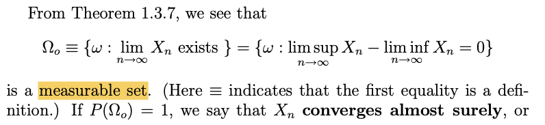
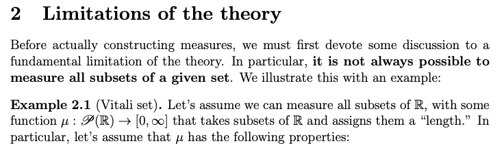
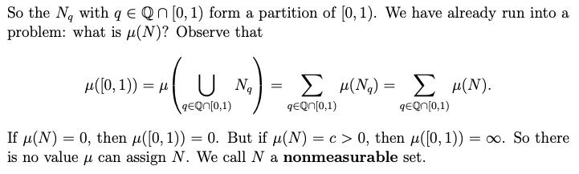

강의영상
youtube: https://youtube.com/playlist?list=PLQqh36zP38-xlxvNIex1h6j7lUQALgCU1
예비학습
\(\cap_{n=1}^{\infty}(-\frac{1}{n},\frac{1}{n})=\{0\}\)
- \(\cap_{n=1}^{\infty}(-\frac{1}{n},\frac{1}{n}) =\{0\}\)을 증명하라.
(증명)
step1: \(\cap_{n=1}^{\infty}(-\frac{1}{n},\frac{1}{n})\)은 원소로 \(0\)을 포함한다.
\(\forall n \in \mathbb{N}\): \(-\frac{1}{n} < 0 < \frac{1}{n}\)
\(\Leftrightarrow \forall n \in \mathbb{N}\): \(0 \in (-\frac{1}{n},\frac{1}{n})\)
\(\Leftrightarrow\) \(0 \in (-\frac{1}{1},\frac{1}{1})\) and \(0 \in (-\frac{1}{2},\frac{1}{2})\) \(\dots\)
\(\Leftrightarrow\) \(0 \in (-\frac{1}{1},\frac{1}{1}) \cap (-\frac{1}{2},\frac{1}{2}) \cap \dots\)
\(\Leftrightarrow\) \(0 \in \cap_{n=1}^{\infty}(-\frac{1}{1},\frac{1}{1})\)
step2: \(\cap_{n=1}^{\infty}(-\frac{1}{n},\frac{1}{n})\)은 원소로 \(0\)보다 큰 임의의 양수를 포함하지 않는다.
포함한다고 가정하자. 즉
\(\exists \delta >0\) such that \(0+\delta \in \cap_{n=1}^{\infty}(-\frac{1}{n},\frac{1}{n})\)
NOTE: From \(\delta>0\), \(\exists N \in \mathbb{N}\) such that \(0<\frac{1}{N}<\delta\)
THUS \(\delta \notin (-\frac{1}{N},\frac{1}{N})\) \(\Rightarrow\) CONTRADICTION! (\(\because \cap_{n=1}^{\infty}(-\frac{1}{n},\frac{1}{n}) \subset (-\frac{1}{N},\frac{1}{N}))\)
step3: \(\cap_{n=1}^{\infty}(-\frac{1}{n},\frac{1}{n})\)은 원소로 \(0\)보다 큰 임의의 음수를 포함하지 않는다.
Vacuous truth
- \(P \Rightarrow Q\) 에서, \(P\)가 틀렸거나 \(P\)를 만족하는 집합이 공집합일 경우 \(P\Rightarrow Q\)라는 명제는 항상 참이되고 이러한 참을 배큐어스 트루 라고 말한다.
- 이해를 돕기 위한 예시
- 명제1: 최규빈교수보다 나이 많은 학생은 A+를 받지 못했다.
- 명제2: 최규빈교수보다 나이 많은 학생은 A+를 받았다.
여기에서 명제1,명제2는 모두 참이어야 한다. 그래야 명제1,명제2의 대우는 모두 참이 되며
- 대우1: A+를 받은 학생은 최규빈교수보다 나이가 적다.
- 대우2: A+를 받지 못한 학생은 최규빈교수보다 나이가 적다.
두 대우의 합성명제인 아래도 참이 된다.
- A+을 받거나 받지 못한 학생은 최규빈교수보다 나이가 적다.
토폴로지
정의
- 정의: \(\Omega\)에 대한 부분집합의 모임 \({\cal T}\)가 아래의 조건을 만족하면 \({\cal T}\)를 \(\Omega\)의 토폴로지라고 부른다.
- \(\emptyset, \Omega \in {\cal T}\)
- \(\forall A,B \in {\cal T}:~ A\cap B \in {\cal T}\) (finite intersection에 닫혀있음)
- \(\forall {\cal A} \subset {\cal T}: ~ (\cup_{A \in {\cal A}}A ) \in {\cal T}\) (uncoutable union, arbitrary union에 닫혀있음)
- \((\Omega,{\cal T})\)를 위상공간 (topological space) 이라고 부른다. 그리고 \({\cal T}\)의 원소를 \({\cal T}\)-open set이라고 부른다.
- 모티브: 실수위에서의 열린구간 \((a,b)\)의 개념을 추상화하고 싶음. 즉 open interval \(\overset{일반화}{\to}\) open set 을 하고 싶음. 그리고 이러한 open set 만을 모은 collection \({\cal T}\)라는 기호로 표현하고 싶음.
- 관찰1: \((1,3) \cap (2,4) = (2,3)\) // 2개의 open-interval을 교집합하니 open-interval이 나옴
- 관찰2: \(\cap_{n=1}^{\infty}(1-\frac{1}{n},3+\frac{1}{n}) =[1,3]\) // countable many한 open-interval을 교집합하면 closed-interval이 나옴
- 관찰3: \(\cup_{n=1}^{\infty}(1+\frac{1}{n},3-\frac{1}{n})= (1,3)\) // countable many한 open-interval을 합집합하면 open-interval이 나옴
- 관찰4: \(\cup_{\epsilon>0}^{\infty}(1+\epsilon,3-\epsilon) =(1,3)\) // uncountalbe many한 open-interval을 합집합해도 open-interval이 나옴
- 왜 open interval을 추상화하고 싶을까?
- open interval은 엄청 특이한 성질이 있음. 구간 \((a,b)\)의 모든 점 \(x\)는 점 \(x\)를 포함하는 (아주 작은) 열린구간 \((x-\epsilon,x+\epsilon)\) 이 \((a,b)\)사이에 존재함.
- 이 성질은 극한의 개념을 정의하기에 매우 유리하다. (따라서 연속, 끊어짐 등을 이해하기에도 좋다)
- \(\Omega=\mathbb{R}\)일 경우 open-set
- \((1,2)\)
- \((1,2)\cup (5,6)\)
- \((a-\epsilon, a+\epsilon)\), where \(\epsilon>0\) and \(a\in\mathbb{R}\)
- \(\dots\)
- 체크
- \(\Omega=\mathbb{R}\), \({\cal T}=\{\emptyset, \Omega\}\)라고 하자. \({\cal T}\)는 \(\Omega\)에 대한 토폴로지이며 따라서 \((\Omega, {\cal T})\)는 위상공간이 된다.
- \(\Omega=\mathbb{R}\), \({\cal T}=2^{\mathbb{R}}\)라고 하자. 그렇다면 \({\cal T}\)는 \(\Omega\)에 대한 토폴로지이며 따라서 \((\Omega,{\cal T})\)는 위상공간이 된다.
- 그렇지만 우린 이런걸 쓰고 싶은게 아니야 (\(\star\))
짧은지식
- 이론: \(\Omega=\mathbb{R}\) 일때 \({\cal U}=\{O:O = \cup_{i=1}^{\infty}(a_i, b_i),~ a_i\leq b_i \in \mathbb{R}\}\)라고 하자. 즉 \({\cal U}\)는 open interval의 countable union으로 표현가능한 집합들의 모임이다. 그렇다면 \((\mathbb{R}, {\cal U})\)는 위상공간이 된다.
그리고 특별히 이러한 위상 \({\cal U}\)를 \(\mathbb{R}\)에서의 standard topology, Euclidean topology, 혹은 usual topology 라고 부른다. 사실 \({\cal U}\)가 바로 우리가 토폴로지를 정의하는 이유이다 (매우 중요하다는 뜻이에요)
\({\cal U}\)의 원소를 원래 엄밀하게는 \({\cal U}\)-open set이라고 불러야 하지만 이 경우는 \({\cal U}\)를 생략하여 open set 이라고 부르기도 한다. 즉 우리가 일반적으로 말하는 “실수 \(\mathbb{R}\)에서의 열린집합, 혹은 그냥 열린집합” 은 \({\cal U}\)-open set을 의미한다.
이 이론이 의미하는 바는 (1) 실수에서의 열린구간의 일반화 버전은 열린집합이며 (2) 열린집합은 열린구간의 가산합집합으로 표현가능하다 라는 뜻이다.
\({\cal U}\)를 한글로는 보통위상이라고 표현하기도 하지만 그렇게 널리 사용되지는 않는다. 하지만 따로 지칭할 용어가 마땅치 않아서 나는 그냥 보통위상이라고 부르겠다.
- 이론: \((\mathbb{R},{\cal U})\)를 보통위상공간 (usual topological space) 이라고 하자. 모든 \(O \in {\cal U}\) 는 아래를 만족한다.
- \(\forall o \in O, \exists a,b \in \mathbb{R}\) such that \(o \in (a,b) \subset O \quad \cdots (\star)\)
참고로 어떠한 집합 \(O\)에 대하여 \((\star)\)를 만족하는 원소 \(o\)를 interior point of \(O\) 라고 부른다. 따라서 어떤 집합의 모든 원소가 그 집합의 interior point라면 그 집합은 openset이라고 해석할 수 있다.
저는 나이테정리라고 외웠어요..
- 실수에서의 \({\cal U}\)-openset 을 정의하는 방법
- 열린구간의 가산합집합
- 모든원소가 interior point인 집합
- 위상공간 \((\mathbb{R},{\cal U})\)를 고려하자. 여기에서 \({\cal U}=\{O:O = \cup_{i=1}^{\infty}(a_i, b_i),~ a_i\leq b_i \in \mathbb{R}\}\)를 의미한다. 아래의 사실들을 관찰하라.
- 모든 열린구간은 열린집합이다.
- \((-\infty, a)\)와 \((a,\infty)\)는 모두 열린집합이다.
- 한점의 원소 \(\{a\}\)는 닫힌집합이다. (\(\{a\}\)의 여집합이 열린집합이므로)
- \((-\infty, a]\)와 \([a,\infty)\)는 모두 닫힌집합이다.
- 공집합과 \(\mathbb{R}\)은 열린집합이다.1 따라서 공집합과 \(\mathbb{R}\)은 닫힌집합이다.
시그마필드 vs 토폴로지
| 시그마필드 | 토폴로지 | |
|---|---|---|
| 시작 | “길이를 잴 수 있는 집합”이란 개념을 일반화 하고 싶다 | “열린구간”의 개념을 일반화 하고 싶다 |
| 기호 | \({\cal F}\) | \({\cal T}\) |
| 공간 | \((\Omega,{\cal F})\) | \((\Omega,{\cal T})\) |
| 원소 | \({\cal F}\)-measurable set, measurable set | \({\cal T}\)-open set |
| 쓸모없는공간 | \((\mathbb{R},2^{\mathbb R})\) | \((\mathbb{R},2^{\mathbb R})\) |
| 쓸모있는공간 | \((\mathbb{R},{\cal R})\) | \((\mathbb{R},{\cal U})\) |
\({\cal R}\)이 뭔데..?
측도론의 유산
Borel \(\sigma\)-field
- 정의: \((\mathbb{R}, {\cal U})\)를 보통위상공간이라고 하자. 아래와 같은 시그마필드를 Borel \(\sigma\)-algebera on \(\mathbb{R}\)이라고 한다.
\[{\cal B}(\mathbb{R}):=\sigma({\cal U})\]
그리고 \({\cal B}(\mathbb{R})\)의 원소를 Borel measurable sets이라고 부른다.
- 참고: 교재에서는 \({\cal B}(\mathbb{R})\)를 \({\cal R}\)로 표현하기도 한다.
- 이론: 아래와 같은 집합을 고려하자.
- \({\cal A}_1:= \{A\subset \mathbb{R}: A \text{ is open}\}\)2
- \({\cal A}_2:= \{(a,b): a,b \in \mathbb{R}, a<b\}\)
- \({\cal A}_3:= \{[a,b): a,b \in \mathbb{R}, a<b\}\)
- \({\cal A}_4:= \{(a,b]: a,b \in \mathbb{R}, a<b\}\)
- \({\cal A}_5:= \{[a,b]: a,b \in \mathbb{R}, a<b\}\)
- \({\cal A}_6:= \{(-\infty,b): a,b \in \mathbb{R}, a<b\}\)
- \({\cal A}_7:= \{(-\infty,b]: a,b \in \mathbb{R}, a<b\}\)
- \({\cal A}_8:= \{(a,\infty): a,b \in \mathbb{R}, a<b\}\)
- \({\cal A}_9:= \{[a,\infty): a,b \in \mathbb{R}, a<b\}\)
아래가 성립한다.
\[{\cal R}:={\cal B}(\mathbb{R}) = \sigma({\cal A}_1)=\sigma({\cal A}_2)=\dots=\sigma({\cal A}_9)\]
(증명??) – 증명까지는 아니고 그냥 설명..
예비학습1: countable union의 countable union은 countable union이다.
\[\mathbb{Q}^+ = \cup_{m \in \mathbb{N}}\big(\cup_{n \in \mathbb{N}}\{m/n\}\big)\]
예비학습2: “\(\sigma({\cal A}_1)\)의 모든원소는 \({\cal A}_1\)의 원소를 재료로하여 만들수 있다” 라고 표현할 수 있으며, 여기에서 “만들 수 있다” 라는 의미는 \({\cal A}_1\)의 원소에 가산합집합, 가산교집합, 여집합, 차집합등의 연산을 적용하여 \(\sigma({\cal A})\)의 원소를 만들 수 있다라는 의미이다.
예비학습3: 아래의 연산들은 모두 시그마필드에서 닫혀있다.
- 가산합집합의 가산합집합
- 가산합집합의 가산합집합의 가산합집합
- 여집합의 가산교집합의 가산합집합의 차집합
- \(\dots\)
즉 시그마필드는 가산합집합과, 여집합에 닫혀있고 그들의 합성연산에 닫혀있다고 해석할 수 있다.
이제 아래가 성립한다고 가정해보자.
- \(\sigma({\cal A}_1)\)의 모든 원소는 \({\cal A}_1\)의 원소를 이용하여 만들 수 있다. 즉 \({\cal A}_1\)의 모든원소에 가산합집합, 여집합, 혹은 그들의 합성연산을 적용하여 \(\sigma({\cal A}_1)\)의 모든 원소를 나타낼 수 있다.
- \({\cal A}_1\)의 모든 원소는 \({\cal A}_2\)의 원소를 이용하여 만들 수 있다. 즉 \({\cal A}_1\)의 모든원소에 가산합집합, 여집합 혹은 그들의 합성연산을 적용하여 \({\cal A}_2\)의 모든 원소를 나타낼 수 있다.
그렇다면 궁극적으로는 \({\cal A}_2\)의 원소를 가산합집합, 여집합, 혹은 그들의 합성연산을 적용하여 \(\sigma({\cal A}_1)\)를 표현할 수 있다는 의미이고 이는 \({\cal R}=\sigma({\cal A}_1)=\sigma({\cal A}_2)\)를 의미한다. \({\cal R}=\sigma({\cal A}_3)=\sigma({\cal A}_4)=\dots=\sigma({\cal A}_9)\) 역시 유사하게 따질 수 있다.
- 이론: 위의 이론의 \({\cal A}_2,\dots,{\cal A}_9\)에서 \(\mathbb{R}\) 대신에 \(\mathbb{Q}\)를 사용해도 성립한다.
- NOTE: \({\cal A}_1,\dots,{\cal A}_9\)는 모두 파이시스템이다.
르벡메져
- Thm: \(\Omega=\mathbb{R}\) 에 대하여 아래와 같은 collection \({\cal A}\)를 고려하자.
\[{\cal A}=\{(a,b]: a,b\in \mathbb{R}, a<b\}\]
그리고 아래와 같은 함수 \(\tilde{m}:{\cal A} \to [0,\infty]\)을 고려하자.
\[\tilde{m}((a,b]) = b-a\]
이러한 함수 \(\tilde{m}\)은 \((\mathbb{R},{\cal R})\)에서의 메져 \(m:{\cal R} \to [0,\infty]\)로 쉽게 업그레이드 가능하며 이 업그레이드 결과는 유일하다.
(증명)
카라테오도리의 확장정리에 의하여
- \({\cal A}\)가 세미링임을 체크하고
- \(\tilde{m}:{\cal A}\to[0,\infty]\)이 \({\cal A}\)에서 (1) additive (2) \(\sigma\)-subadditive (3) \(\sigma\)-finite 을 만족한다는 사실을 체크하면 된다.
된다. \(\tilde{m}\)이 \(\sigma\)-subaddtive 성질을 가진다는 것을 보이는 것이 어려운데 이는 받아들이자.
- 정의: 위의 이론에 의하여 업그레이드 된 메져 \(m\)을 르벡메져라고 한다.
- 이론: \((\mathbb{R},{\cal R})\)를 잴 수 있는 공간이라고 하고, \(m\)을 이 공간에서의 르벡메져라고 하자. 아래와 같은 집합들의 모임을 생각하자.
- \({\cal A}_1:= \{A\subset \mathbb{R}: A \text{ is open}\}\)
- \({\cal A}_2:= \{(a,b): a,b \in \mathbb{R}, a<b\}\)
- \({\cal A}_3:= \{[a,b): a,b \in \mathbb{R}, a<b\}\)
- \({\cal A}_4:= \{(a,b]: a,b \in \mathbb{R}, a<b\}\)
- \({\cal A}_5:= \{[a,b]: a,b \in \mathbb{R}, a<b\}\)
- \({\cal A}_6:= \{(-\infty,b): a,b \in \mathbb{R}, a<b\}\)
- \({\cal A}_7:= \{(-\infty,b]: a,b \in \mathbb{R}, a<b\}\)
- \({\cal A}_8:= \{(a,\infty): a,b \in \mathbb{R}, a<b\}\)
- \({\cal A}_9:= \{[a,\infty): a,b \in \mathbb{R}, a<b\}\)
\({\cal A}_1,{\cal A}_2,\dots, {\cal A}_9\)에서의 르벡메져와 그 값이 일치하지만 \({\cal R} - {\cal A}_1, \dots, {\cal R}-{\cal A}_9\) 등에서는 일치하지 않는 새로운 메져 \(m'\)은 존재할 수 없다. 즉 르벡메져는 \({\cal A}_1,\dots,{\cal A}_9\)에서의 값으로 유일하게 결정된다.
(설명)
르벡메져는 \(\sigma\)-finite한 메져이고, \({\cal A}_{1}\dots{\cal A}_{9}\)는 모두 “7wk-파이시스템에서의 확장이론(메져버전)”에 소개된 이론의 조건 1,2를 만족하는 파이시스템이다. 따라서 르벡메져의 값은 \({\cal A}_1\dots,{\cal A}_9\)에서의 값으로 유일하게 결정된다.
자잘한 내용 모음
생략때문에 헷갈려
- 어떠한 수학교재에서, 아무말 없이 open set 이라고만 하면 보통위상공간 (usual topological space) 으로부터 정의되는 open set을 의미한다. 즉 usual topological space \((\mathbb{R},{\cal U})\)에서 \({\cal U}\)의 원소를 의미한다.
- 어떠한 수학교재에서, 아무말 없이 measurable set 이라고 하면 르벡측도로 잴 수 있는 집합을 말한다. 즉 \((\mathbb{R}, {\cal R})\) 에서의 \({\cal R}\)의 원소를 의미한다. 즉 일반적으로 정의하는 “잴 수 있는 집합”에서 “잴 수 있다”는 의미는 “르벡측도로 잴 수 있다”는 의미이다.3 일반적인 \((\Omega, {\cal F})\)에서 \({\cal F}\)의 원소는 ${F}-measurable set 이라고 표현해야 옳다.
- 하지만 때에 따라서는 \({\cal F}\)의 원소를 그냥 measurable set이라고 부른다.
예시1
여기에서 measuralbe set은 앞에서 정의한 \({\cal F}\)의 원소라는 의미이다.

- measure, measurable 등의 의미는 눈치껏 알아먹어야 한다.
예시2
일반적으로 measure라는 단어가 사용되면 “르벡측도로 재다”라는 의미를 지칭하는 경우가 많음

예시3
\((\Omega, {\cal F})\)를 잴 수 있는 공간이라고 할 때는 meaure의 의미가 꼭 “르벡측도로 재다” 라는 것을 의미하는 건 아님
예시4
비탈리집합이 nonmeasurable set이라는 의미는 르벡측도로 측정불가능한 집합이라는 것을 의미함.

토폴로지와 측도론의 논리전개
- 토폴로지와 측도론을 공부하면서 비슷한점이 있다고 느낌
- 비슷한점1: 모두 어떠한 속성을 가지는 집합을 “일반화” 하기 위해서 생겨났다. 예를들면, 잴 수 있는 집합이라는 것은 “수직선에서 길이를 잴 수 있는 집합”의 개념을 일반화하고 싶었어서 만들었으며, 열린집합이라는 것은 “수직선에서의 열린구간”이라는 개념을 일반화하고 싶어서 만들었다.
- 비슷한점2: 따라서 “잴 수 있는 집합들의 모임”, “열린집합들의 모임” 이라는 집합들의 집합이라는 장치를 고안하였다. 그리고 이러한 과정에서 일반적인 “길이(length)를 잴 수 있는 집합”의 속성, “열린구간”의 속성을 모아 “잴 수 있는 집합의 모임”, “열린집합의 모임” 을 정의하는 재료로 사용하였다.
- 비슷한점3: “잴 수 있는 집합들의 모임”, “열린집합들의 모임”의 원소를 각각 \({\cal F}\)-mesurable set, \({\cal T}\)-open set이라고 부르는 것도 유사하다.
- 비슷한점4: \(\Omega=\mathbb{R}\)에 대한 시그마필드와 토폴로지가 각각 \({\cal R}\)이거나 \({\cal U}\)이라면 그냥 잴 수 있는 집합, 열린 집합 이라고 부르는 것도 유사하다.
- 비슷한점5: 비슷한점4의 경우를 제외하고는 \({\cal F}\)-mesurable set, \({\cal T}\)-open set이라고 부르는게 원칙인데 이것도 문맥에 따라서 그냥 생략하고 쓰는 것도 유사하다. (사실 매번 언급하는게 귀찮기는 해)
- 비슷한점6: 일반화의 과정에서 발생하는 이상한 개념의 충돌이 존재한다.
- 잴 수 있는 집합의 모임을 \((\mathbb{R},2^\mathbb{R})\)로 설정하면 비탈리집합도 잴 수 있다. (그렇지만 \((\mathbb{R}, {\cal R})\)에서는 비탈리집합이 잴 수 없는 집합이므로 보통 책에서는 “잴 수 없는 집합”이라고 배운다)
- 열린집합의 모임을 \((\mathbb{R},2^\mathbb{R})\)로 설정하면 한점만 포함하는 집합 \(\{x\}\)는 열린집합이 된다. (그렇지만 \((\mathbb{R},{\cal U})\)에서는 한점만 포함하는 집합은 닫힌집합이므로 보통 책에서는 “한점만 포함하는 집합은 닫힌집합이다” 라고 배운다.
제 생각: 사실 이는 일반화 과정이 겪는 불가피한 문제인듯 해요. “문자, 그림, 기호 따위를 쓸 수 있는 도구” 정도로 펜슬의 의미를 확장하면 손가락도 펜슬이 되고, 발가락도 펜슬이 됩니다.
- 비슷한점7: 열린집합과 토폴로지, 잴수있는 집합과 시그마필드를 정의하는 두가지 루트가 존재한다.
- 루트1: 토폴로지를 먼저 정의하고 토폴로지의 원소가 열린집합이라고 정의한다. 혹은 시그마필드를 먼저 정의하고 시그마필드의 원소가 잴 수 있는 집합이라고 정의한다.
- 루트2: 열린집합을 정의하고 (집합의 모든 원소가 interior point이면 열린집합), 열린집합의 모임으로 토폴로지를 정의한다. 혹은 잴 수 있는 집합을 정의하고, 잴 수 있는 집합의 모임으로 시그마필드를 정의한다.
Footnotes
위상공간의 정의에따라 열린집합이라 주장할 수 있음. 혹은 \(\mathbb{R}=\cup_{n=1}^{\infty}(-n,n)\)이고 \(\emptyset=(0,0)\)이므로 열린집합이라 주장할 수 있음. 혹은 \(\mathbb{R}\)과 \(\emptyset\)의 모든 원소가 내점이므로 (공집합의 경우는 배큐어스트루에 의하여 모든 원소가 내점이다) 열린집합이라 주장할 수 있음↩︎
여기에서 open은 엄밀하게 말하면 usual topological spcace \((\mathbb{R},{\cal U})\) 에서의 \({\cal U}\)-open set을 의미한다. 즉 보통위상공간에서 정의가능한 openset을 의미한다.↩︎
혹은 우리의 용어로는 “확률을 잴 수 있는” 정도의 뜻으로 받아들일 수 있다.↩︎